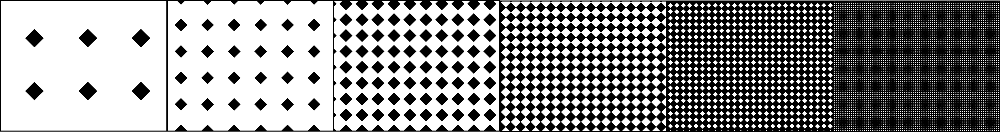

Here's a pattern I created using Adobe Illustrator:
About this pattern
To create this pattern and differentiate the different levels of darkness, I played with the design elements of shape and space - which also combines to create texture as well.
From lightest to darkest, I decreased the white space between the spaces by increasing the frequency and closeness of the shapes - causing the pattern to grow darker and darker as the amount of white space decreases.
"Are you a pirate? Because you arrr my sunshine"